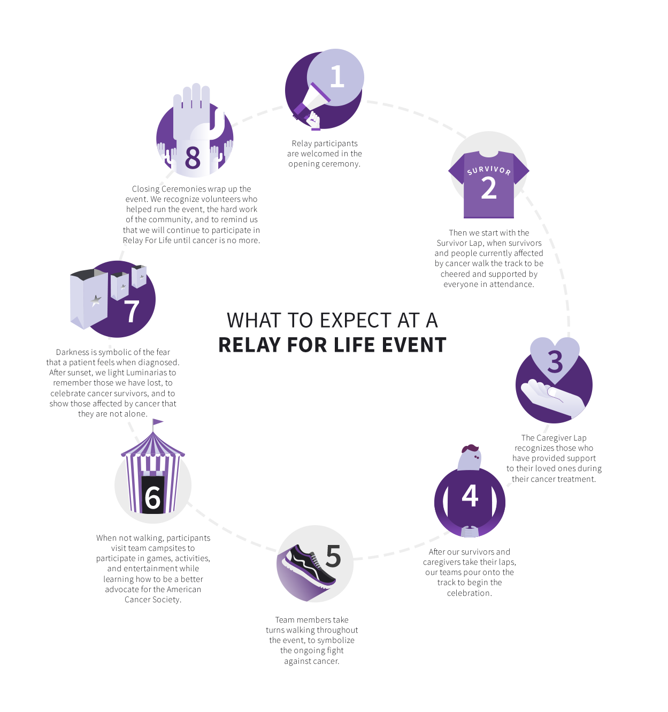
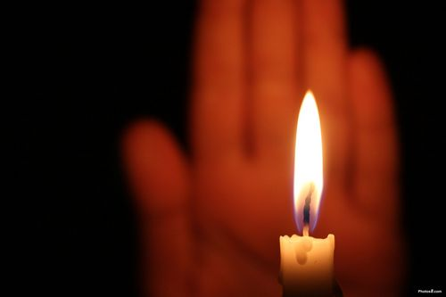

Learn About Relay For Life
Each team sets up a themed campsite at the event and continues their fundraising efforts by collecting donations for food, goods, games, and activities. This money will count towards their overall team fundraising goal. When you participate in a Relay For Life event, you become a vital part of the American Cancer Society: a volunteer. You are now part of an organization of 2.5 million survivors, patients, advocates, volunteers, caregivers, and researchers doing everything within our power to save lives.
What to Expect at an Event:  Photo courtesy of acsevents.org
The History Of Relay
Gordy spent a grueling 24 hours circling the track at the University of Puget Sound. Friends, family, and patients watched and supported him as he walked and ran more than 83.6 miles and raised $27,000 through pledges to help save lives from cancer. As he circled the track, he thought of how he could get others to take part. He envisioned having teams participate in a 24-hour fundraising event. The next year, 19 teams were part of the first Relay at the historical Stadium Bowl and raised $33,000.
Gordy passed away August 3, 2014, at the age of 71 from heart failure after battling stomach cancer. But his legacy lives on. He helped shape an idea that started as one man walking and running a track and helped turn it into a global event raising over $5 billion to help save lives throughout the world. © 2017 American Cancer Society, Inc. All rights reserved.